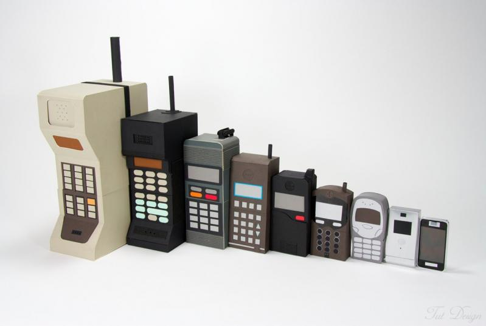
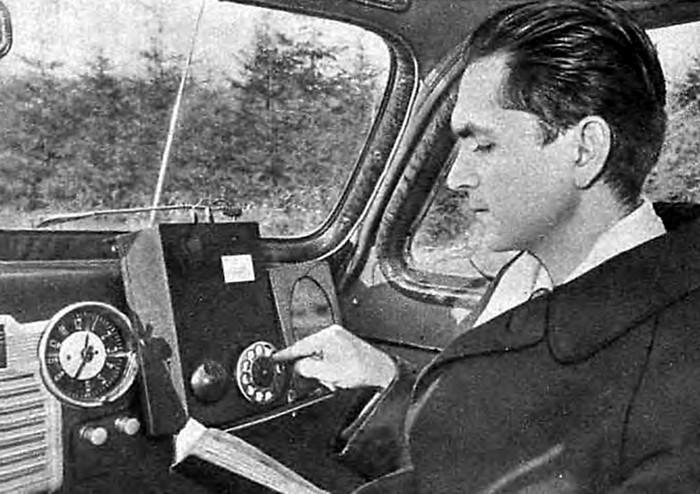
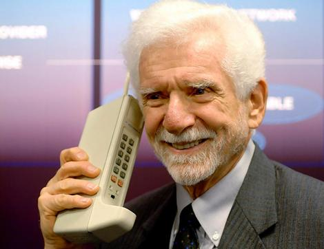
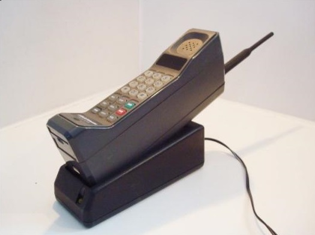

Історія мобільного телефону
Що таке мобільний телефон, не знають, напевно, тільки аборигени.
Всі розвинені країни давно увійшли в «мобільну» еру. І якщо всього 15-20 років тому стільниковий телефон могли собі дозволити бізнесмени і багаті люди, то зараз такий гаджет є практично у кожної людини, від дітей до пенсіонерів. У багатьох і по два мобільника. А деякі фанати навіть примудряються міняти телефон при кожному виході нової моделі.
Звичайно ж, так було не завжди. Хто ж подарував всьому світу таке диво — мобільний
Трохи історії
Iдея створення мобільних апаратів для зв'язку виникла у військових в середині ХХ століття. Ідеєю розробки мобільного телефону був ознаменований 1947 рік. Особливість такого пристрою була в тому, що його можна було розмістити тільки в автомобілі. Звичайно, інженерів можна зрозуміти, адже тягати апарат вагою в 40 кг навряд чи хтось погодився б.
Але прогрес не стоїть на місці. І до 70-х років минулого століття такі мобільні телефони значно «скинули вагу» і зупинилися на позначці 12-14 кг. Але їх живлення все так же було прив'язане до бортових систем автомобіля.

1957 р.
Перший мобільний телефон
У 50-х роках Моторолла славилася своїми переносними радіостанціями, але про стільникові телефони навіть мова не йшла. Але в 1954 році в компанію прийшов молодий інженер — Мартін Купер. І в 1967 році відділ під його керівництвом випустив перші портативні рації, які почала використовувати поліція Чікаго. А через майже 20 років з початку кар'єри в Моторолла Мартін Купер зрозумів, що може створити порівняно невеликий стільниковий телефон. Протягом року, поки йшла розробка пристрою, компанія намагалася переконати Федеральну Комісію з комунікацій в необхідності виділення вільних частот для стільникового зв'язку. Влада пішла на компромісне рішення: Моторолла повинна була на практиці продемонструвати саму можливість створення таких мереж.
Випробування першого стільникового телефону відбулося 3 квітня 1973 року. Для цього на 50-поверховому будинку в Нью-Йорку була змонтована перша базова станція. Вона могла обслужити до 30 абонентів. Сам перший стільниковий телефон, створений Мартіном Купером, називався DynaTAC і важив 1,15 кг. На його передній панелі розташовувалися 12 клавіш, 10 з яких були цифровими, а дві — для виклику і припинення розмови. Ні дисплея, ні додаткових функцій не було.

Мартін Купер з першим стільниковим телефоном
Першим, кому подзвонив Мартін Купер з стільникового телефону, був Джоель Енгель (начальник дослідного відділу Bell Laboratories), який стверджував, що в найближчі роки неможливо створення таких портативних пристроїв. Це був справжній тріумф і компанії Моторолла, і Мартіна Купера.
Тільки після випробування і прес-конференції розробники та інженери зрозуміли, що ними була здійснена справжня революція в сфері комунікацій. Після успішного експерименту вже в 1974 році Федеральною Комісією були виділені частоти для приватних компаній.
Масове виробництво і комерційні продажі DynaTAC 8000Х почалися через 10 років після здійснення першого дзвінка. Апарат важив 800 г, працював на одному заряді акумулятора близько 1 години, мав одну мелодію, міг зберігати до 30 телефонних номерів. Його вартість становила 4000 доларів.

Motorolla DynaTAC 8000X
З тих далеких часів мобільний телефон зазнав масу змін і зараз цей апарат вагою близько 100 г дозволяє дзвонити і відправляти повідомлення, слухати радіо і музику, фотографувати і знімати відео, спілкуватися по Інтернету і багато іншого. Такий маленький пристрій вже став звичним кишеньковим комп'ютером.